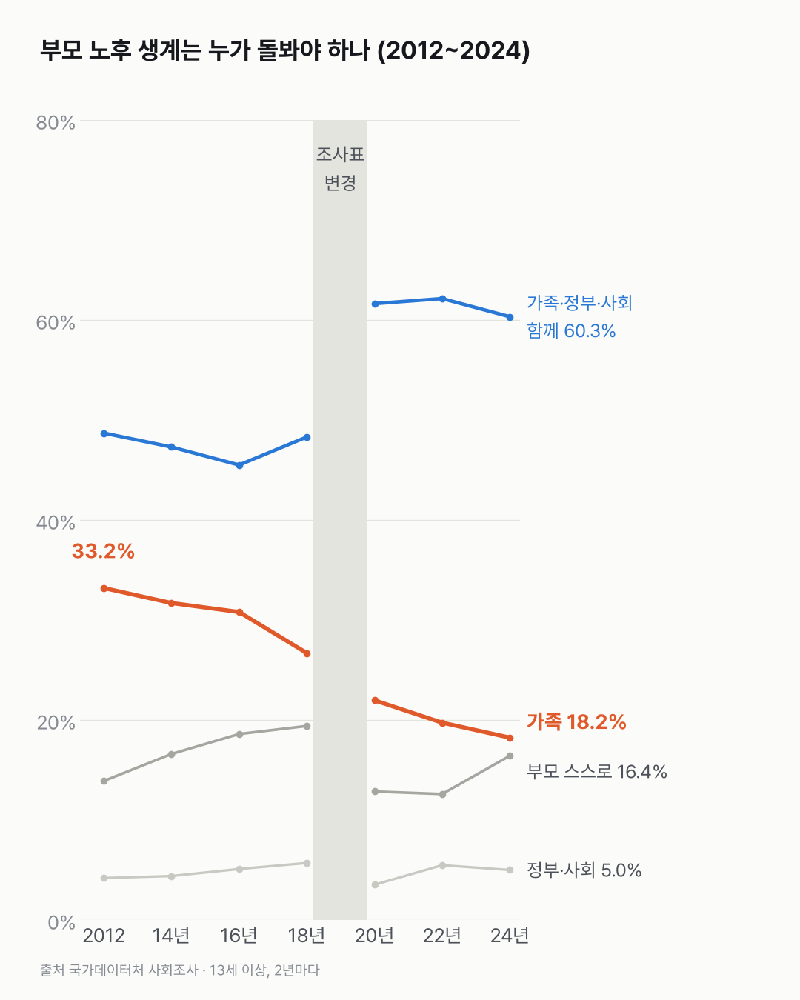
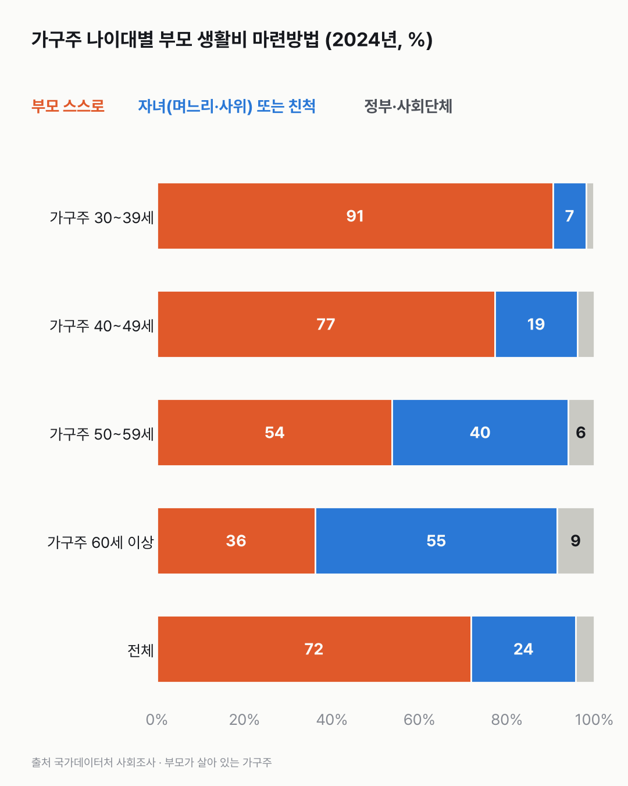

부모 노후는 다 함께 돌보자는데, 생활비는 부모가 대요
생각으로는 '함께 돌보자'가 가장 많은데, 실제 생활비는 대부분 부모 손에서 나와요. 가구주가 나이 들수록 자녀가 대는 비율이 커져요.

- 부모 노후를 '가족'이 돌봐야 한다는 13세 이상은 2012년 33.2%에서 2024년 18.2%로 줄었어요.
- 2024년 가장 많은 답은 '가족·정부·사회가 함께'(60.3%)예요.
- 실제 부모 생활비는 71.8%를 부모 스스로 마련해요(2024년, 가구주의 답).
자식이 부모를 모셔야 한다는 말은 오래된 말이에요. 사회조사는 이 생각을 2년마다 물어 왔어요. '가족이 돌봐야 한다'는 답은 조사표가 바뀌기 전(33.2 → 26.7%)에도, 바뀐 뒤(22.0 → 18.2%)에도 조사 때마다 줄었어요.
지금 가장 많은 답은 '가족·정부·사회가 함께'(60.3%)예요. 2012~2018년엔 45~49%였고, 조사표가 바뀐 2020년 이후엔 60~62%라 두 구간을 바로 잇지 않았어요. '부모 스스로 해결'은 16.4%, '정부·사회'는 5.0%예요.
그럼 실제로는 누가 낼까요? 부모 생활비의 71.8%를 부모 스스로 마련해요(2024년, 가구주 응답). 자녀 또는 친척이 24.0%, 정부·사회단체가 4.2%예요.
가구주 나이가 많을수록 자녀가 마련하는 비율이 커져요. 가구주가 30대면 부모 스스로가 90.6%예요. 60세 이상이면 순서가 뒤집혀요. 자녀가 55.3%로 부모 스스로(36.2%)보다 많아요.

'함께'라고 답한 사람이 60%를 넘는데, 실제 생활비에서 정부·사회단체가 맡은 건 4.2%예요. 두 숫자는 답한 사람이 달라서 바로 잇진 않았지만, 나란히 놓인 모습이 오래 남았어요.
이 숫자는 어디서 왔나요
출처
어떻게 셌나요
- 두 가지를 따로 봤어요. 견해는 13세 이상에게 물은 생각이고, 생활비 마련방법은 부모 중 한 명이라도 살아 있는 가구주가 답한 실제 상황이에요. 둘을 섞지 않았어요.
- 2년마다 조사해요. 2010년까지는 15세 이상에게 물어서 견해는 2012년부터 썼어요.
- 2020년 조사표에서 '가족 중 누가(장남·아들·딸 등)' 세부 문항이 빠졌어요. 2018→2020년에 '함께'가 48.3%에서 61.6%로 크게 오른 건 이 변경과 겹쳐서, 읽을 때 주의가 필요해요.
- 생활비 마련방법은 2020년(연금 응답 기준 명시)·2022년(형제자매 → 부모님의 자녀 또는 친척)에 조사표가 바뀌어 2022~2024년만 썼어요.
- 응답이 적어 믿기 어렵다는 표시(*)가 붙은 칸은 없었어요.
한계 4가지
이 데이터로 말할 수 없는 것
- 견해와 실제는 대상이 달라요. 견해는 13세 이상 전체, 실제는 부모가 살아 있는 가구주예요.
- 2018→2020년 견해 변화는 조사표 변경과 겹쳐요. 실제로 생각이 바뀐 건지 가를 수 없어요.
- '부모 스스로'에는 연금이 주 생활비인 경우가 들어가요(2020년부터 명시).
- 원인은 말하지 않아요. 연금 확대, 가치관 변화 등은 이 데이터로 판단할 수 없어요.
계산 기록
쓰기 전에 정한 것
- 조사표가 바뀐 해(2020·2022년)를 데이터를 받기 전에 보고, 생활비 마련방법은 2022~2024년만 쓰고 견해의 세부 문항은 쓰지 않기로 정했어요.
- 2018→2020년에 크게 바뀐 건 받은 뒤 발견해서 한계에 적었어요. 쓰는 중에 알게 된 거라 여기 적어 둬요.
처음 던진 질문
부모님 노후, 누가 책임져야 할까요? 이 질문에 대한 생각이 2012년부터 2024년까지 어떻게 바뀌었는지, 그리고 실제 부모 생활비는 누가 대는지 사회조사에서 같이 찾아봤어요.
수집·검증 기록
- 표: KOSIS DT_1SSFA040R, DT_1SSFA021R. 수집일 2026-10-29 (KOSIS 오픈API).
- 검증: 모든 칸에서 선택지 합 = 100%(±0.2). 신뢰도 낮음(*) 칸 없음.
- 교차 확인: 2024년 가족 18.2%(2년 전보다 1.5%p↓), 가족·정부·사회 함께 60.3%, 부모 스스로 16.4%가 보도와 같음.
새 글 나오면 받아 보기
피드 리더 앱에 이 사이트 주소를 한 번 넣어 두면, 새 글이 올라올 때 앱에 떠요. 가입이나 메일 주소는 필요 없어요.
받는 법 보기
- 피드 리더 앱을 하나 골라요. 새 글을 모아 보여 주는 앱이에요. 예를 들면 Feedly나 Inoreader가 있어요. 둘 다 무료고 웹·휴대폰에서 써요.
- 앱에서 '구독 추가'(+)를 누르고 아래 주소를 붙여 넣어요.
- 끝이에요. 새 글이 올라오면 앱 목록에 떠요.
https://protofu.github.io/opendata-insight/feed.xmlFeedly를 쓴다면 여기를 눌러 바로 추가할 수도 있어요.